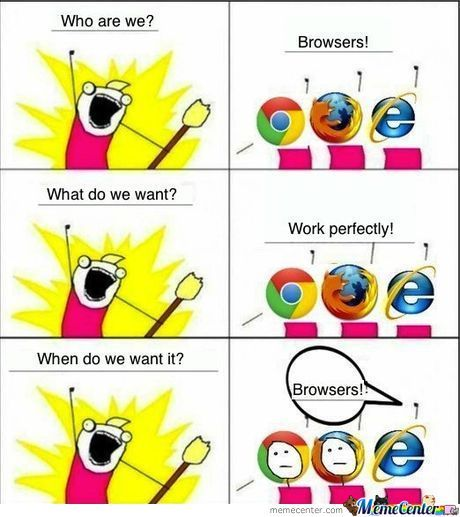

HTML tentou, mas não foi...
O CSS foi criado para resolver um grande problema
HTML foi criado para exibir conteúdo, dados. Não para decorar!
No HTML 3.2 foram incluídas tags de estilização, um exemplo é a tag <font>.
Cada vez ficava mais complicado o desenvolvimento de páginas web.
W3C entrou no jogo e deu um basta: Criou o CSS.
Permitiu: Desacoplamento, reutilização de código e organização, ou seja, "economizou" muito trabalho.
¡¡¡Prioridade!!!

Oooouuuuu
!important
Sobrescreve a definição de CSS forçadamente, ou seja, use apenas:
Caso a hierarquia de cascata não se aplique.
Caso a tenha que sobrescrever uma definição de um plugin (Bootstrap).
Nunca se estiver fazendo um plugin.
Nunca para o site inteiro.
{ Seletores - Básicos }
{ Seletores - Combinators }
{ Seletores - Pseudo-Classes (pt.1) }
{ Seletores - Pseudo-Elements }
{ Seletores - Attributes }
Os browsers exibem as cores no padrão RGB (Red, Green, Blue)

Você pode definir as cores por:
Nome:
red ,
green ,
blue
Código Hexa (#RGB - #RRGGBB):
#FF0000 ,
#00FF00 ,
#0000FF
Os valores hexadecimais são:
preto - 0123456789ABCDEF - branco
RGB: rgb(255, 0, 0) , rgb(0, 255, 0) , rgb(0, 0, 255)
Os valores rgb são: preto - 0/255 - branco
Nota: Existe também a opção de alpha chamada RGBA:
0.0/1.0 - rgba(255, 255, 255, 0.5)
Existem duas formas de dimencionar elementos: Valores Relativos e Absolutos:
Relativos:
| em | Tamanho relativo a propriedade font-size do elemento (2em = 2 x font-size) |
| ex | Tamanho relativo ao x-height (altura da caixa baixa da fonte), do font-size do elemento |
| ch | Tamanho relativo ao font-size do "0" |
| rem | Tamanho relativo ao font-size do elemento root |
| vw | Tamanho relativo à 1% do width do viewport (window size do browser) |
| vh | Tamanho relativo à 1% do height do viewport (window size do browser) |
| vmin | Tamanho relativo à 1% da menor dimensão do viewport (window size do browser) |
| vmax | Tamanho relativo à 1% da maior dimensão do viewport (window size do browser) |
| % | Tamanho relativo a um % do elemento pai |
Absolutos:
| cm | Centímetros |
| mm | Milimetros |
| in | Polegadas [Inches] (1in = 96px = 2.54cm) |
| px | Pixels * (1px = 1/96 de 1in) [* - Relativo ao tamanho do device] |
| pt | Pontos (1pt = 1/72 de 1in) |
| pc | Picas (1pc = 12pt) |
| deg | Graus (Sentido horário/anti-horário) |
Os browsers muitas vezes adicionam prefixos a algumas propriedades CSS que ainda estão em fase experimental e que, naturalmente, mudam de comportamento conforme o navegador.
-webkit- (Chrome, Safari, Opera [new])
-moz- (Firefox)
-o- (Opera [old])
-ms- (Internet Explorer)
Lista completa

Para poder colocar estilo você precisa entender os objetos:
Cada valor adiciona no tamanho do elemento:
Margin - 10px
Border - 5px
Padding - 5px
Width - 100px X Height - 50px
O tamanho real em tela é: 120 X 70px
Nota: também existe mais um elemento que só aparece quando é utilizado: { Outline } ( a "borda da borda" )
Como os objetos se organizam na tela?

block
Todo e qualquer elemento inicia em uma nova linha, alinhado a esquerda.
inline
O elemento segue o fluxo de exibição de tela.

Como os elementos se posicionam?
Segue o fluxo de exibição, ignorando as propriedades top/left/right/bottom.
Respeita as propriedades top/left/right/bottom referente ao elemento pai.
Respeita propriedades top/left/right/bottom referente a página.
Respeita propriedades top/left/right/bottom referente ao elemento posicionado mais próximo.
Nota: também existe o posicionamento por camadas feito através da propriedade { Z-Index }
Define o comportamento caso os elementos internos ultrapassem os limites do elemento pai.
visible
Elementos que definem multiplos valores possuem um comportamento que necessita atenção:
border / margin / padding

CSS 3

- Nasceu em 2012
- Interpretado por browsers
- Inclui todo CSS 2
- Adicionou novas funcionalidades
- Efeitos e Animações
- Transformações 2D/3D
- Efeitos de Cores
A imagem é dividida em nove partes e posicionadas nas bordas no sentido horário:
border-image
Adicionadas novas formas de definir as cores

RGBA:
rgb(255, 0, 0)
rgba(0, 255, 0, 0.5) ,
Os valores rgb são: preto - 0/255 - branco
Os valores alpha são: transparent - 0/1 - total da cor
HSLA:
hsl(0, 100%, 50%)
hsla(0, 255, 0, 0.5)
H - Matiz [Hue] / S - Saturação / L - Luminosidade (A - Alpha)
Os valores hsl são: red - 0/360 (green - 120 / blue - 240)

Text Shadow!
Nota: O box-shadow pode ser usado em pseudo-elements (::before / ::after).
Todos os transforms 2D em um só:
matrix(scaleX(),skewY(),skewX(),scaleY(),translateX(),translateY())
Transforms
transition-timing-function
| ease-in - Inicio lento | ease-out - Lento, Rápido, Lentamente |
| ease-in-out - Lento no início e no fim | ease - Lento, Rápido, Lentamente |
| linear - Mesma velocidade do início ao fim | cubic-bezier - define a velocidade por valor |
Transition


E se houvesse uma forma de definir CSS pelo device que rodar o site...
O que olha?
- Width X Height Viewport
- Width X Height Device
- Orientação (Paisagem/Retrato)
- Resolução
- Tipo do Device
Tipos de Device
- all - Todos
- print - Impressora
- screen - Tela
- speech - Screenreaders
Sugestões?! Dúvidas?!

Marcio Dias
 github.com/marciosalinodias
github.com/marciosalinodias
 marciosalinodias@gmail.com
marciosalinodias@gmail.com
 marcio.dias@aplub.com.br
marcio.dias@aplub.com.br
Muito obrigado!
 Impress.js
Impress.js